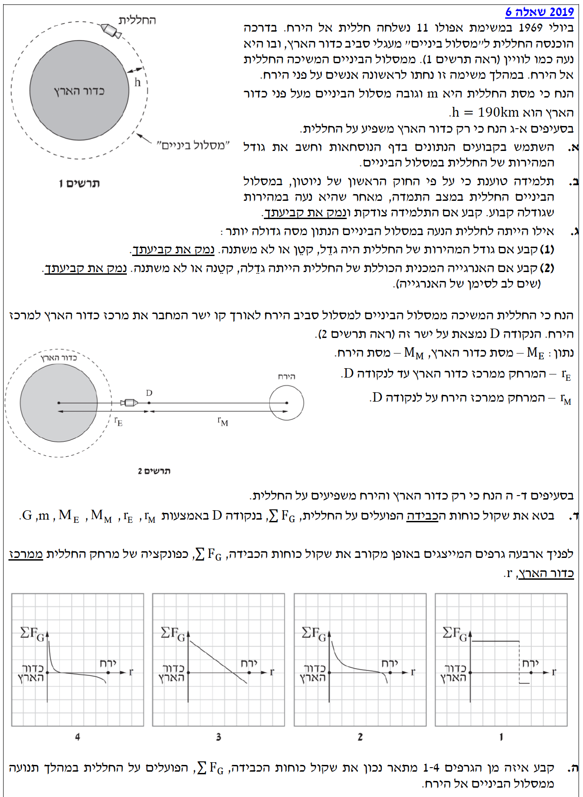
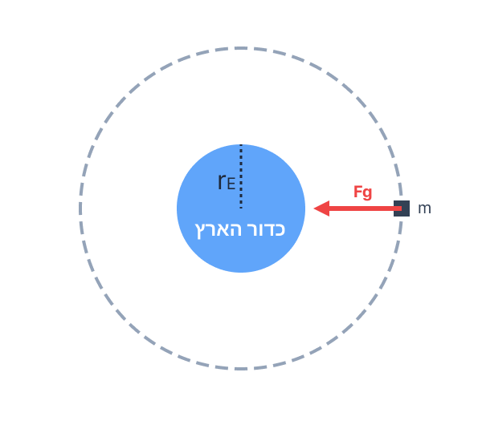
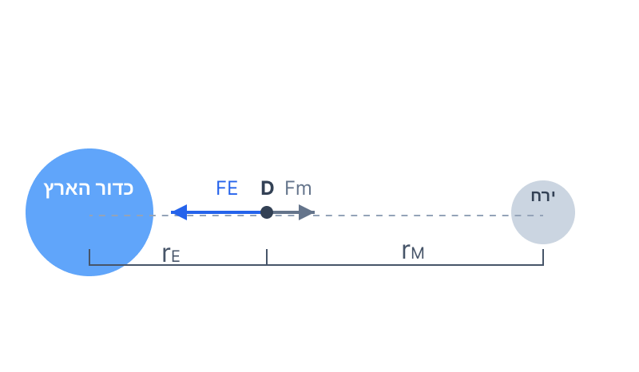

פתרון מודרך, צעד-אחר-צעד הכולל כבידה עולמית, מסלול לווייני ותנועה מעגלית
תלמידים יקרים, השאלה שלפנינו עוסקת בכבידה עולמית ובתנועה מעגלית. ניזכר שהחוק השני של ניוטון וחוק הכבידה האוניברסלי הם הכלים המרכזיים שלנו כאן.
אל תחששו מהנוסחאות – כל ביטוי חדש נפתח צעד אחר צעד מתוך משוואות הבסיס שמופיעות בדף הנוסחאות, תוך ניתוח תרשימי כוחות.

את גודל המהירות הקווית \( v \) של החללית במסלול הביניים (תנועה מעגלית קצובה).
עקרון: בתנועה מעגלית הכוח השקול מכוון אל מרכז המעגל. במסלול לווייני, כוח הכבידה יכול לשמש ככוח הצנטריפטלי.

תרשים כוחות (FBD): כוח הכבידה מהווה את הכוח הרדיאלי
נחשב את רדיוס המסלול הכולל ממרכז כדור הארץ:
נרשום את משוואת התנועה בציר הרדיאלי (הכיוון החיובי אל מרכז המעגל):
נצמצם את המסה \( m \) של החללית (שמופיעה בשני אגפי המשוואה) ואת אחד ה- \( r \) במכנה, ונבודד את המהירות \( v \):
כעת נציב את הערכים המספריים:
טענת התלמידה: "החללית נמצאת במצב התמדה כי היא נעה במהירות שגודלה קבוע."
לקבוע האם התלמידה צודקת ולנמק בעזרת חוקי הפיזיקה.
עקרון: לפי החוק הראשון של ניוטון, גוף יתמיד במצב מנוחה או בתנועה בקו ישר במהירות קבועה רק כאשר שקול הכוחות הפועלים עליו הוא אפס. למהירות יש גם גודל וגם כיוון.
התלמידה אינה צודקת.
אמנם גודל המהירות של החללית קבוע, אך מכיוון שהחללית נעה במסלול מעגלי, כיוון המהירות שלה משתנה בכל רגע ורגע. שינוי בכיוון המהירות משמעותו שיש לחללית תאוצה (תאוצה רדיאלית כפי שראינו בסעיף א').
לפי החוק השני של ניוטון (\( \Sigma F = ma \)), קיומה של תאוצה מעיד על כך ששקול הכוחות אינו אפס. במקרה זה, פועל על החללית כוח הכבידה של כדור הארץ שאינו מאוזן על ידי שום כוח אחר.
לקבוע האם גודל המהירות של החללית החדשה גדל, קטן או לא משתנה, ולנמק.
עקרון: בניתוח תנועה של גוף במסלול מעגלי סביב גוף מרכזי משלבים בין חוק הכבידה לבין התנאי לתנועה מעגלית קצובה.
מכיוון שבמהלך פיתוח משוואת המהירות התקבל כי המסה \( m \) של החללית מצטמצמת משני אגפי המשוואה (\( G\frac{M_E m}{r^2} = m\frac{v^2}{r} \)), המהירות הקווית של גוף במסלול לווייני אינה תלויה במסה שלו עצמו.
מסת החללית החדשה גדולה יותר (\( m' > m \)).
לקבוע האם האנרגיה המכנית הכוללת של החללית גדלה, קטנה או לא משתנה (יש לשים לב לסימן המינוס של האנרגיה).
עקרון: האנרגיה המכנית הכוללת היא סכום האנרגיה הקינטית והאנרגיה הפוטנציאלית. כאשר דנים בשינוי באנרגיה המכנית, בוחנים את שני הרכיבים האלה יחד.
נסתכל על נוסחת האנרגיה הכוללת: \( E = -\frac{G M_E m}{2r} \).
הגודל \( \frac{G M_E}{2r} \) הוא גודל קבוע וחיובי עבור מסלול נתון. נוכל לסמן אותו באות \( K \).
לכן ניתן לרשום: \( E = -K \cdot m \).
כאשר המסה \( m \) גדלה, הערך המוחלט של האנרגיה (כלומר הגודל החיובי \( K \cdot m \)) גדל. אולם, בגלל סימן המינוס לפני הביטוי, משמעות הדבר היא שהאנרגיה הופכת להיות שלילית יותר.
במתמטיקה ובפיזיקה, מספר שהוא "שלילי יותר" נחשב למספר קטן יותר (למשל, \(-100\) קטן מ-\(-50\)).
לבטא את שקול כוחות הכבידה הפועלים על החללית בנקודה D, המסומן כ- \( \Sigma F_G \).
עקרון (סופרפוזיציה): הכוח השקול הוא הסכום הווקטורי של כל הכוחות הפועלים על הגוף.

תרשים כוחות: נקבע את הכיוון אל כדור הארץ כחיובי (+)
כוח המשיכה שמפעיל כדור הארץ (כיוון חיובי):
כוח המשיכה שמפעיל הירח (כיוון שלילי):
נחבר את הכוחות לקבלת השקול המבוקש:
לקבוע איזה מבין הגרפים 1-4 מתאר נכון את השקול ולנמק.
כדי לקבוע איזה מהגרפים מתאר נכונה את שקול כוחות הכבידה, עלינו לנתח את התנהגות הפונקציה בשלושה היבטים עיקריים חוק הכבידה ותלות במסה ובמרחק.
1. צורת הפונקציה (פסילת קווים ישרים):
על פי חוק הכבידה של ניוטון, כוח הכבידה נמצא ביחס הפוך לריבוע המרחק (\( \frac{1}{r^2} \)).
בקרבת כדור הארץ, השפעת כוח הכבידה של הירח זניחה, ולכן עקומת שקול הכוחות מתנהגת בעיקר כפונקציה של \( \frac{1}{r^2} \).
בדומה לכך, בקרבת הירח (כאשר המרחק מכדור הארץ נעשה גדול והמרחק מהירח קטן), כוח הכבידה של הירח דומיננטי ומושך לכיוון הנגדי, ולכן הפונקציה הופכת לשלילית ומתנהגת כ־ \( -\frac{1}{(D-r)^2} \) (כאשר \( D \) הוא המרחק בין הגורמים).
התנהגות זו אינה ליניארית בשום שלב, ולכן ניתן מיד לפסול את שני הגרפים המציגים קווים ישרים (גרפים 1 ו-3).
2. נקודת התאפסות הכוח (בחירה מבין הגרפים הנותרים 2 ו-4):
בנקודה מסוימת בין כדור הארץ לירח, כוחות הכבידה של שני גרמי השמיים משווים זה את זה בערכם המוחלט וכיוונם מנוגד, כך ששקול הכוחות מתאפס (נקודת חיתוך עם ציר \(r\)).
מכיוון שמסת כדור הארץ גדולה פי 81 בקירוב ממסת הירח, הרי שבאמצע הדרך שבין כדור הארץ לירח, כוח המשיכה של כדור הארץ עדיין חזק משמעותית מכוח המשיכה של הירח. לכן, בנקודת האמצע שקול הכוחות עדיין יהיה חיובי.
כתוצאה מכך, נקודת ההתאפסות חייבת להתרחש במיקום קרוב הרבה יותר אל הירח מאשר אל כדור הארץ – כלומר, מעבר למחצית הדרך. נקודה זו מוצגת היטב רק בגרף מספר 2, בעוד שבגרף 4 נקודת החיתוך קרובה יותר לכדור הארץ, בניגוד להיגיון הפיזיקלי.